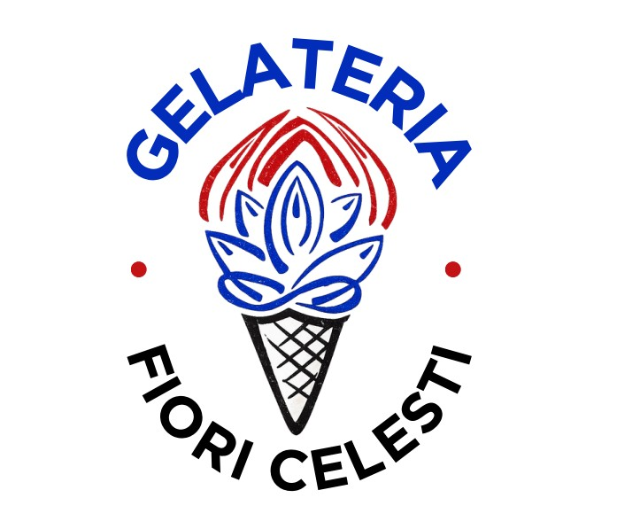
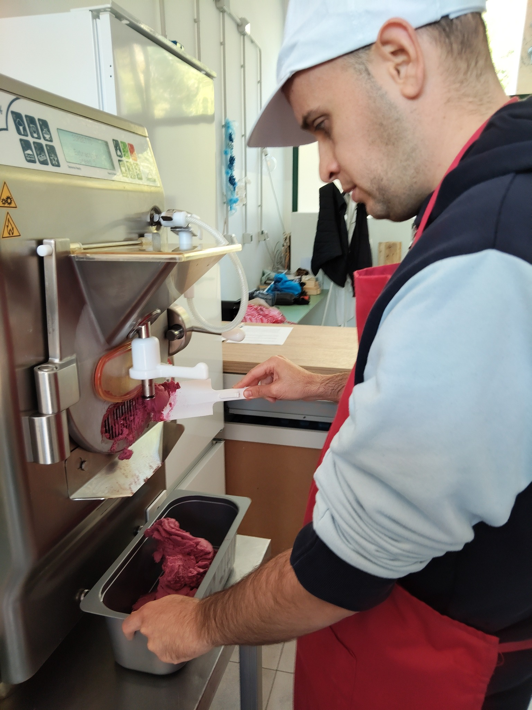
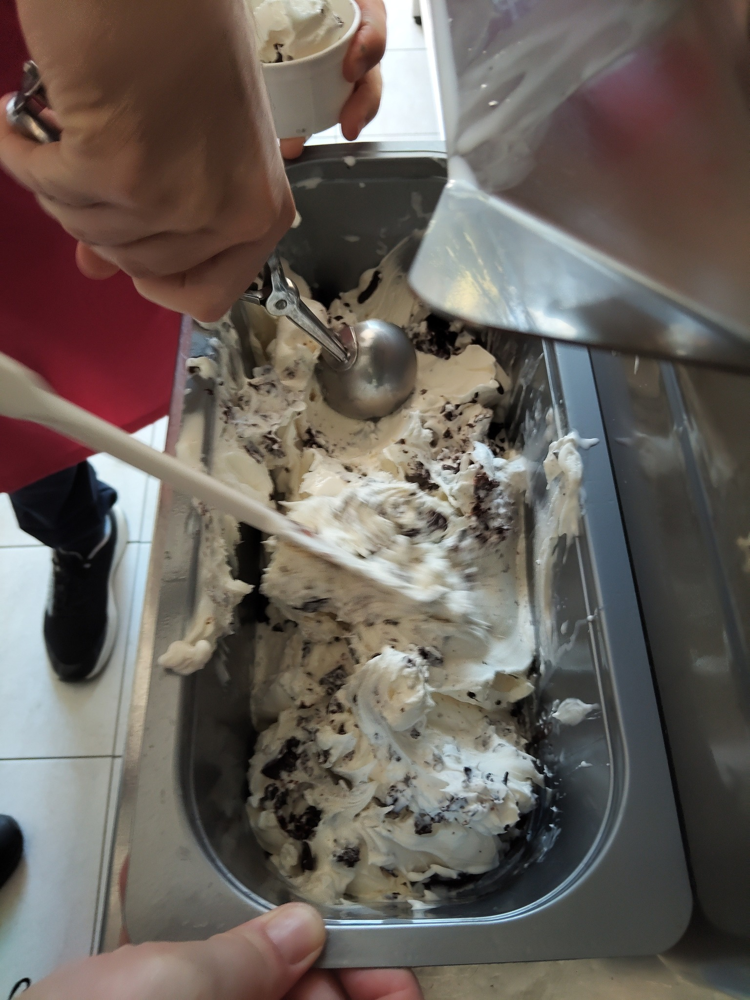
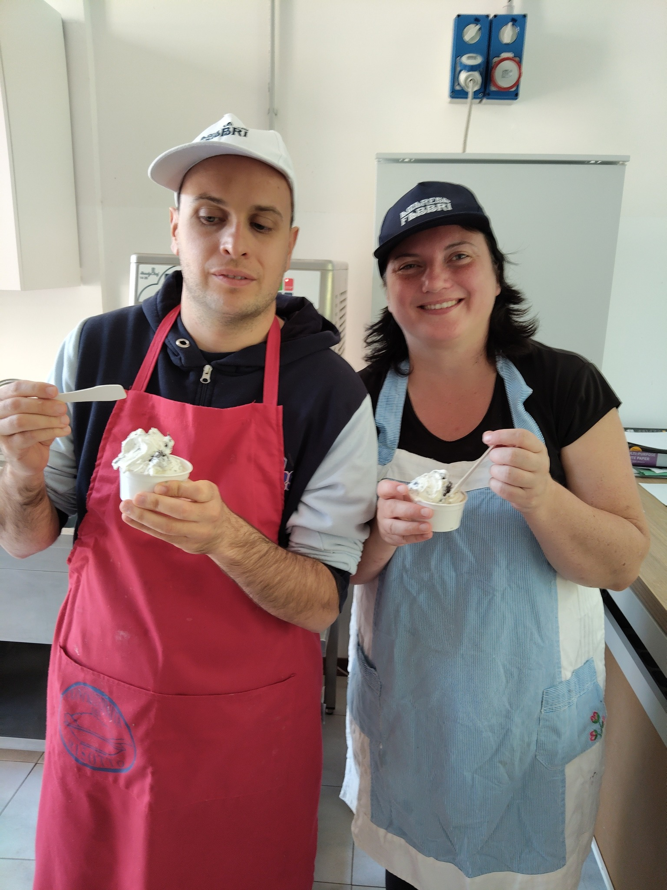
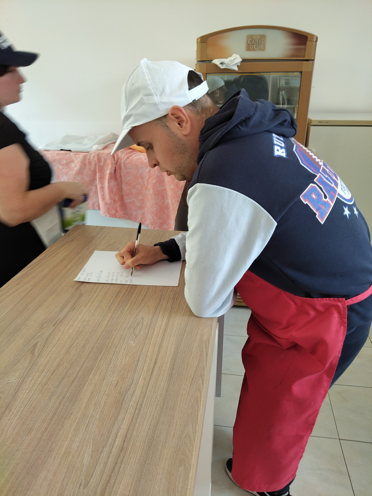

Artigianalità, inclusione e amore in ogni gelato.

La Gelateria Artigianale Fiori Celesti nasce dall'impegno quotidiano dell'associazione nel promuovere inclusione sociale attraverso il lavoro. Il gelato è preparato con passione e dedizione dai ragazzi diversamente abili dell'associazione, sotto la guida esperta di Giuliano Curati.
Ogni gusto viene realizzato con ingredienti naturali selezionati, seguendo la tradizione della gelateria artigianale italiana. Il gelato diventa così non solo un prodotto di qualità, ma un concreto strumento di crescita personale e autonomia per chi lo prepara.
Il laboratorio di gelateria fa parte del percorso educativo psicomotorio "Ama et Labora" della Casa Laboratorio: un luogo dove il lavoro diventa dignità, fiducia in sé stessi e appartenenza alla comunità.

Il nostro è il vero gelato artigianale, fatto come si faceva una volta: latte fresco, panna, zucchero e ingredienti genuini, nient'altro. Niente additivi, niente semilavorati industriali, nessuna scorciatoia. Solo materie prime semplici e selezionate, lavorate a mano dai ragazzi dell'associazione, esattamente come faresti tu a casa tua, ma con la maestria che solo la passione sa dare.

Il laboratorio è guidato da Giuliano Curati, maestro gelatiere con una esperienza decennale nel settore. Nel corso della sua carriera ha avviato e formato numerose gelaterie in Italia e all'estero, trasmettendo i segreti della gelateria artigianale italiana a mastri gelatai di tutto il mondo. Con questa stessa passione e competenza, Giuliano guida oggi i ragazzi dell'associazione: dalla mantecazione al bilanciamento degli ingredienti, un percorso che sviluppa manualità, concentrazione e autonomia, valorizzando le capacità di ognuno.
Scegliere un gelato Fiori Celesti significa sostenere concretamente i ragazzi dell'associazione che lo hanno preparato con le loro mani. Il lavoro in gelateria non è solo formazione: è inclusione reale, è dare valore alle persone, è costruire una comunità dove ognuno ha un ruolo e viene riconosciuto.



